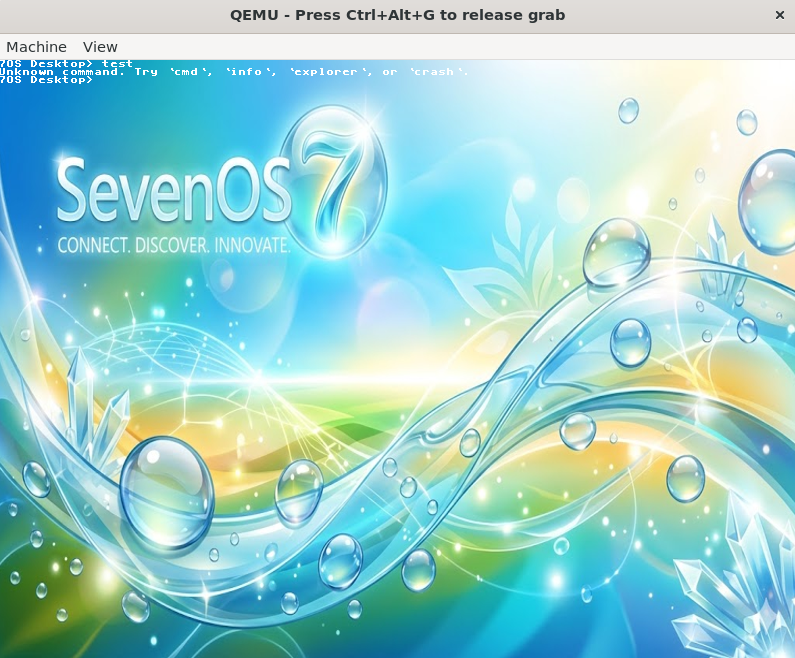

Breathe Life
Into Your PC.
Welcome back to the Frutiger Aero era. 7OS is a custom-built, bare-metal operating system kernel complete with a glassy desktop GUI, dynamic windows, and pure nostalgia.

Frutiger Aero Aesthetics
Glossy buttons, skeletal glass windows, and vibrant aquatic gradients. A true return to beautiful software.
Bare-Metal Kernel
Written from scratch in C and Assembly. No Linux kernel underneath—just pure 32-bit hardware interaction.
Interactive Environment
Move windows seamlessly using WASD and navigate an integrated virtual command line environment.